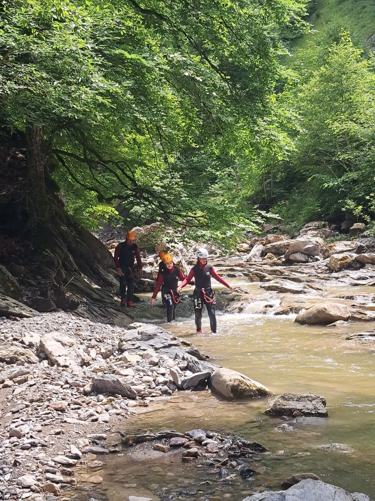

Treffpunkt
Start, Kennenlernen und Erwartungsabgleich.
Canyoning ist keine einzelne Technik, sondern eine geführte Bewegung durch eine Schlucht. Dazu gehören je nach Tour Wasserpassagen, Gehen, Klettern, Abseilen, Rutschen und manchmal Sprünge. Im Allgäu wird genau diese Mischung häufig gesucht, weil sie Naturerlebnis und Aktivität direkt verbindet.

Wer den Begriff zum ersten Mal hört, denkt oft an Wildwasser, Klettersteig oder an etwas zwischen beidem. Tatsächlich ist Canyoning eine eigene Form des Outdoor-Sports. Du folgst mit Guide und Gruppe dem natürlichen Verlauf einer Klamm oder Schlucht. Das kann ruhig und technisch wirken oder spielerisch und flüssig, je nach Gelände.
Wichtig ist: Es geht nicht um einen einzelnen Höhepunkt, sondern um das Zusammenspiel aus Umgebung, Wasser, Bewegung und Führung. Genau deshalb ist die Frage „Was ist Canyoning?“ so wichtig für SEO und für Nutzer. Wer die Grundidee versteht, kann Touren wie die Starzlachklamm viel besser einordnen.
Das Allgäu ist für diesen Einstieg besonders stark, weil die Region eine klare Verbindung aus alpiner Landschaft, touristischer Nachfrage und gut verständlichen Einsteiger- bis Mittelstufen-Angeboten hat.
Start, Kennenlernen und Erwartungsabgleich.
Neopren, Helm und Gurt werden auf dich angepasst.
Gehen, Rutschen, Abklettern, Abseilen und je nach Tour weitere Elemente.
Nachklang, Umziehen und Einordnung, ob du mehr davon willst.
Touren mit klarer Führung, moderatem Anspruch und Fokus auf Wassergefühl, Grundtechnik und Vertrauen.
Mehr Wiederholungen, mehr Dynamik, längere Belastung und oft technischere Passagen.
Kein Ort für spontane Selbstüberschätzung. Hier werden Wasserkompetenz, mentale Ruhe und Technik deutlich wichtiger.
Empfehlung
Die Buchung erfolgt auf der Partnerseite von BlueRiver. Sinnvoll ist der Klick vor allem dann, wenn du Canyoning als Sportart jetzt einordnen kannst und nach einer konkreten Tour im Allgäu suchst.
Die Website selbst verkauft nichts, sondern leitet transparent weiter.